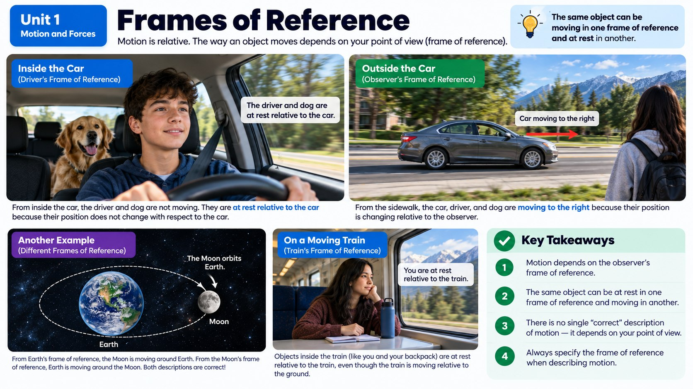

If you watched the crash from inside the car, from the sidewalk, and from a helicopter overhead, would the car look like it was moving the same way each time?

It Depends on Where You're Standing
Picture the crash-test dummy sitting in the driver's seat as the car speeds toward the pole. To the dummy, the dashboard and steering wheel never move: they're always right there, perfectly still. But to a scientist standing on the sidewalk watching the whole thing happen, that same car is clearly zooming past at high speed. Neither person is wrong. They're just using a different reference point, which is the fixed spot or object you compare motion to in order to decide whether something is moving and how fast.
This is one of the trickiest but coolest ideas in physics: motion isn't something an object just "has." It only makes sense when you say what you're comparing it to. A passenger sitting still in a moving car isn't moving relative to the car, but is absolutely moving relative to the road, the pole, and everything else outside the window.
Now add the helicopter into the mix. A pilot hovering high above the intersection sees the whole scene laid out like a map: the car racing along the road, the pole waiting up ahead, and the sidewalk observer standing off to the side. From up there, the pilot can watch the gap between the car and the pole shrink second by second. That's a third valid frame of reference, and it happens to be an especially useful one, because it lets you see everyone else's frame of reference at once (the dummy's, the sidewalk observer's, and the car's) all from a single bird's-eye view.
Building a Frame of Reference
A frame of reference is the whole setup you use to measure motion: it includes your reference point plus a direction, like "north" or "forward," so you can describe exactly how something is moving, not just that it's moving. Without both pieces, a description of motion is incomplete. Saying "the car is moving" tells you almost nothing. Saying "the car is moving forward, away from the mailbox, toward the pole" actually paints a picture.
Scientists get to choose whatever frame of reference is most useful for the situation, and that choice is really just about convenience. If you're studying how the crash-test dummy behaves inside the truck, it might be easiest to use the truck bed itself as your frame of reference. If you're studying how fast the whole truck is approaching the pole, the road is a much better choice. Neither frame is more "correct" than the other. They're just useful for answering different questions.
One mistake people often make is assuming that if something feels like it's not moving, it truly isn't moving at all. But "feeling still" only tells you about your motion relative to your immediate surroundings, not about the whole picture. Right now, you're sitting still relative to the room around you, yet the room, the building, and the ground underneath you are all whipping through space at over 1,000 kilometers per hour as Earth spins on its axis. You just can't feel it because everything around you is spinning right along with you at the same rate. That's the same reason the crash-test dummy doesn't feel like it's moving fast while the truck cruises along smoothly: it's moving at the same speed as everything around it, right up until the truck stops and it isn't anymore.
Why This Matters for the Crash
Here's where it gets wild: right before the crash, the crash-test dummy on the open truck bed is moving forward at the same speed as the truck. Relative to the truck bed, the dummy looks like it's just sitting there, not moving at all. But relative to the road, the dummy is racing forward just as fast as the truck is. When the truck suddenly slams into something and stops, the dummy (with nothing holding it in place) keeps going at that same speed relative to the road, which is exactly why it goes flying off the back. You'll dig deeper into why that happens in the next few topics, but it all starts with understanding that motion always depends on your point of view.
The Illusion of Motion
Frames of reference can even trick your brain. Have you ever sat in a car stopped at a red light, and the vehicle next to you started rolling forward, and for a split second you were positive that your own car was rolling backward? Your eyes were using the neighboring vehicle as an accidental reference point instead of the road, so your brain briefly built the wrong frame of reference and drew the wrong conclusion about your own motion. It usually takes less than a second to notice the mistake: a quick glance at the road or a dashboard reminds your brain to switch back to a steadier reference point.
Engineers who study how drivers perceive motion take this illusion seriously, because a driver who briefly misjudges whether their own car is moving can react a split second too late in a real emergency. It's a small, everyday reminder that everything you learned about the crash-test dummy applies just as much to ordinary driving as it does to a dramatic collision: your brain is constantly picking reference points, usually without you ever noticing it happen.
Distance Is Not the Same as Displacement
Once you have picked a reference point, there are actually two different ways to answer the question "how far did it go?" and they don't always give the same number. Distance is the total length of the path you actually traveled, every twist and detour included. Displacement is something different: it is the straight-line difference between where you started and where you ended up, plus the direction you ended up in.
Picture walking to a friend's house. You go 40 m east down the sidewalk, then turn and go 30 m north. The distance you walked is 40 m plus 30 m, which is 70 m of actual sidewalk under your shoes. But your displacement is the single straight arrow from your front door to your friend's front door, which works out to 50 m to the northeast. Same trip, two honest answers to "how far," because they are answering slightly different questions.
The strangest case is the one that makes the difference obvious. Run one full lap around a 400 m track and your distance is 400 m: your legs definitely did that work. But your displacement is zero, because you finished standing on the exact spot where you started. There is no difference at all between your starting position and your ending position. Any time an object returns to where it began, its displacement is zero no matter how far it traveled to get there.
This distinction matters for our crash scenario more than it might seem. If you only want to know how much road the truck covered, distance is the number you want. But if you want to know where the truck ended up relative to the pole, and in which direction it was headed when it got there, you need displacement, because displacement carries the direction along with it. Notice the pattern: distance is just a number with a unit, while displacement is a number, a unit, and a direction. That difference is going to come back in the next chapter, because speed and velocity split apart in exactly the same way.
Real-World Connections
Passing Cars on the Highway
If you're riding in a car going 65 mph and another car passes you going 70 mph, that car only looks like it's crawling by, even though both cars are flying down the road relative to someone standing on the shoulder.
Flying Against the Wind
A jet cruising at 500 mph relative to the air around it might only cover 420 mph relative to the ground if it's fighting a strong headwind, or 580 mph if that same wind pushes from behind.
Meet the Scientist
Commercial Airline Pilots & Flight Dispatchers
Pilots and dispatchers plan every single flight around frames of reference. Before takeoff, a dispatcher calculates the plane's airspeed (its speed through the air) and compares it to wind data to predict groundspeed (how fast it's actually covering distance over the Earth). Get the frame of reference wrong, and a flight could run low on fuel or misjudge exactly when to start descending toward the runway.
Key Vocabulary
Bold, underlined words in the reading above are clickable too: tap one to see its definition pop out. Or click or tap a card below to reveal the definition.
Explore More
Frames of Reference | Movement and Forces | Middle School Physics
Chapter Review
1. What two things does a frame of reference need in order to fully describe motion?
2. A crash-test dummy sits still in a car seat while the car speeds down the road. Relative to the car, is the dummy moving?
3. Why might a scientist choose the road, rather than the truck bed, as a frame of reference when studying a crash?
4. Two people watch the same car crash: one from inside the car, one from the sidewalk. Why might they describe the car's motion differently?
5. Which of these is the best example of a reference point?
Design the Experiment
California Science Test (CAST) Practice
Maria is sitting in her car, stopped at a red light. In the lane right next to her, a delivery truck begins slowly rolling forward. For a split second, Maria feels certain that her own car has started rolling backward, even though her foot is firmly on the brake pedal and her car has not moved at all.
Which explanation best accounts for the sensation Maria experienced?